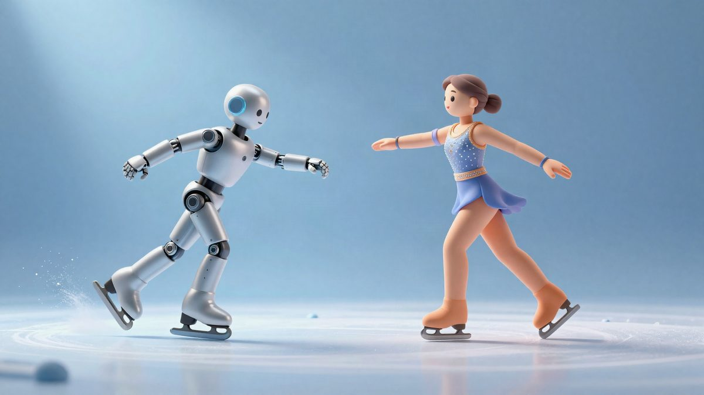
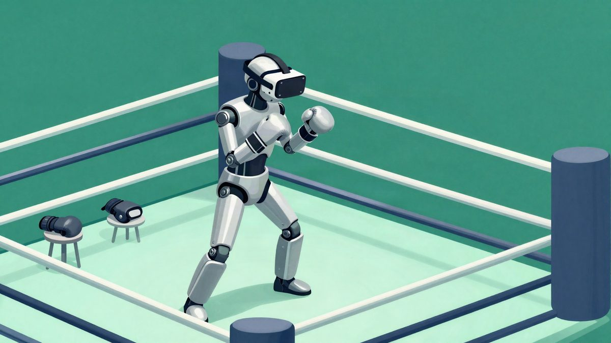

Sberov humanoidni robot Juni plesao je na ledu s olimpijskom pobjednicom Annom Ščerbakovom

Sber je na konferenciji AI Journey u Rusiji održao premijeru ledene predstave s humanoidnim robotom Juni i tvrdi da je to prva takva predstava na svijetu. Robot je plesao s olimpijskom pobjednicom u umjetničkom klizanju Annom Ščerbakovom, a predstava je priređena povodom 185. godišnjice Sbera.
Sber je na konferenciji AI Journey u Rusiji predstavio ledenu predstavu s humanoidnim robotom Juni i tvrdi da je prva takva na svijetu. Na led je izašao zajedno s olimpijskom pobjednicom u umjetničkom klizanju Annom Ščerbakovom. Izveo je plesne elemente, surađivao s partnericom i držao ravnotežu na skliskoj podlozi.
Predstava se temelji na ruskoj bajci "Carevna žaba", a priređena je povodom 185. godišnjice Sbera. Redatelj je Ilja Averbuh, a skladatelj Pjotr Dranga. Autori su spojili umjetničko klizanje, glazbu, kazalište i robotiku, a robot je trebao biti ravnopravan sudionik nastupa.
Led kao test za fizički AI
Za nastup je trebalo razviti sustav za upravljanje kretanjem, koordinaciju i stabilnost. Prema Sberu, led je test za tehnologije fizičkog AI-ja: robot stalno mora procjenjivati položaj tijela, ispravljati pokrete i uskladiti se s čovjekom.
Sber projekt vidi kao jednu od etapa razvoja robotike. Dobivena rješenja, kažu, mogla bi se primijeniti u strojevima koji rade u složenom okruženju koje se mijenja i surađuju s ljudima, u industriji, logistici i svakodnevnom životu.
Premijera je održana u sklopu AI Journeya, programa posvećenog razvoju umjetne inteligencije i njezinoj primjeni u raznim područjima.
Izvor: iXBT
Povezani članci
 Sber je predstavio GigaChat 4: model s kontekstom od milijun tokena koji nekoliko sati radi samostalno26. studenoga 2026.
Sber je predstavio GigaChat 4: model s kontekstom od milijun tokena koji nekoliko sati radi samostalno26. studenoga 2026. Foundation je predstavio Phantom MKII: humanoidni robot za 91 kg tereta, kišu i prašinu20. studenoga 2026.
Foundation je predstavio Phantom MKII: humanoidni robot za 91 kg tereta, kišu i prašinu20. studenoga 2026.
REK je predstavio S.T.E.E.L, sustav kojim čovjek upravlja borbenim humanoidnim robotom12. studenoga 2026.